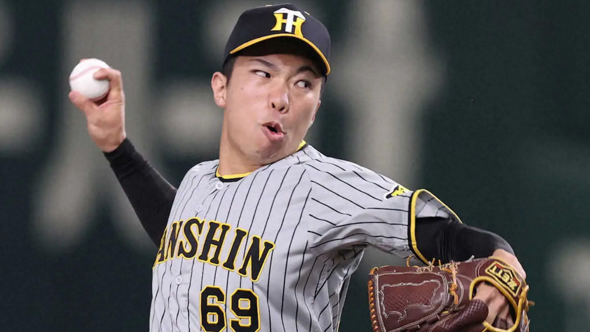

阪神タイガース・石井大智

画像参照: https://www.sponichi.co.jp
生年月日
1997年7月29日 (26歳)
出身
秋田県
投打
右投げ右打ち
通算年
3年(2020年ドラフト8位)
経歴
秋田高専-四国ILplus・高知-阪神
2020年ドラフトで、阪神から支配下全体で最後の指名を受けて入団。1年目・2年目と得意なシンカーとキレのあるストレートを使い、リリーフとして2年連続1軍18登板。2年目には、防御率0.75と高成績を残すも勝ち・ホールドがつかず、プラスの記録が残らなかった。 プロ未勝利のまま挑んだ昨季、4月12日の対ヤクルト戦でプロ初勝利をあげると、その後も登板を積み重ねリリーフとして44試合登板。19ホールドをあげた。また、大の筋トレ好きで知られる石井は、同じ阪神の片山雄哉や、佐藤蓮らとチーム筋肉を結成。鍛え上げた筋肉を生かし、 チームのリリーフの1角としてさらなる活躍が期待される。
2023
1軍44試合、1勝1敗・19ホールド・0セーブ・防御率1.35
2022
1軍18試合、0勝1敗・0ホールド・0セーブ・防御率0.75
2021
1軍18試合、0勝1敗・0ホールド・0セーブ・防御率6.23